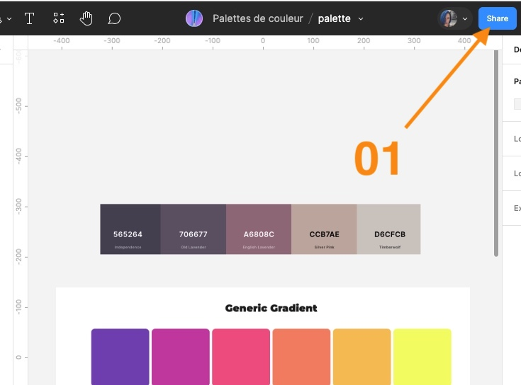
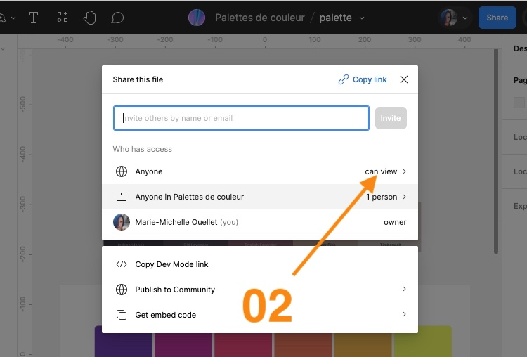
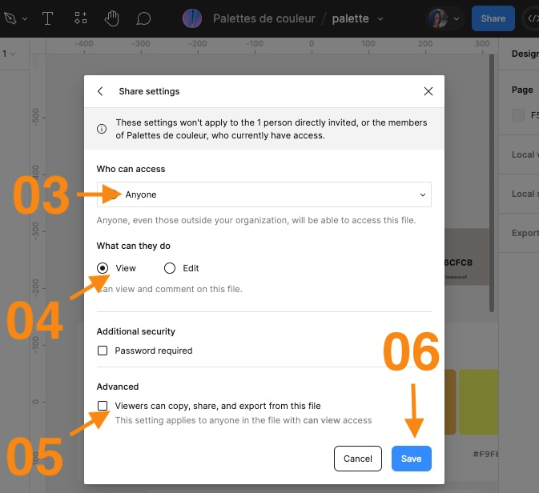

Cette étape concerne le DevOps de votre équipe. Vous devrez dans celle-ci créer le répertoire GitHub qui permettra de sauvegarder et partager le code de votre projet en ligne.




ex: federation-des-locataires--les-casseroles-bruyantes.
Notez que les noms courts des 3 clients 2024 sont : vivre-en-ville, droits-et-libertes et federation-des-locataires. Donnez accès au repo aux membres de votre équipe. Donnez accès au client (prof) via son compte github: kid-synthetique. Clonez le répertoire sur votre poste de travail ou encore mieux, sur votre disque dur. Localement ouvrez le dossier du projet avec Visual Studio Code. À la racine du repo, créez un fichier README.md et inscrivez à l'intérieur de celui-ci, en format Markdown :
- Le nom de votre client.
- Le nom de votre équipe.
- Les noms des membres de votre équipe. À côté de chaque nom, inscrivez: intégrateur, développeur front-end et son rôle secondaire parmi les 3.
- Le nom du cours dans lequel ce projet a lieu ainsi qu'un lien vers la page de présentation du projet, soit: https://tim-montmorency.com/timdoc/582-518MO/projet/
- Un lien vers le tableau Trello de votre projet.
- Un lien vers le Figma du design de l'accueil du projet (comme le github est publique, portez attention aux permissions lorsque vous créez le lien, voir procédure au début de cette page. Ce doit être partagé en mode vue seulement et non en mode édition comme vous avez l'habitude de faire pour vos remises scolaires). À la racine du repo, créez un dossier intitulé "sources".
Ce dossier devra contenir pour l'instant
- la maquette sélectionnée de la page d'accueil en 3 formats : en PDF
- le moodboard en PDF
- le guide de styles en PDF
- le lien vers votre Figma éditable (un seul fichier qui devra contenir les 3 éléments, soient la maquette, le moodboard et le guide de styles). Pour créer ce fichier-lien, suivez la méthode numéro 1 ici. Faites bien attention de nommer vos fichiers correctement, vous pouez créer des sous-dossier pour classer le tout, au besoin. Le dossier sources devra aussi éventuellement contenir le copy deck (format doc) et la maquette en 3 format de la page de détail de nouvelle (PDF + lien vers le Figma éditable). Ces nouveaux fichiers devront être déposés sur le git d'ici le jeudi de la semaine 5, prenez-en bien note à l'agenda, c'est votre responsabilité d'y penser. N'oubliez pas de faire un commit et un pull et push de votre modifications. Dites à vos coéquipiers de faire un clone du répertoire git sur leur poste de travail ou encore mieux, sur leur disque dur.
Attention, pour supporter WordPress, vous devez choisir un hébergeur qui supporte le langage serveur PHP et les bases de données mySQL donc GitHub Pages ne sera pas une option envisageable cette fois.
Avec le département TIM depuis l'an dernier, vous avez à votre disposition l'hébergement chez hostpapa pour déployer votre projet en ligne le temps de la session en cours. Pour procéder à la création de votre compte chez hostpapa, il faut attendre que William (notre TTP) crée votre compte. Veuillez aller voir dans la colonne i vis-à-vis votre équipe dans le fichier Excel ici. Si c'est écrit oui et que vous avez bien reçu votre mot de passe dans le canal Teams de votre équipe, vous pouvez continuer ce qui suit. Visionnez cette petite capsule vidéo. Connectez-vous à votre cPanel et téléversez votre fichier index.html afin de remplacer la page temporaire fournie par défaut par votre hébergeur par la votre.
Ajoutez dans votre fichier README.md sur GitHub, un lien vers votre projet mis-en-ligne (un url qui se termine par tim-momo.com), vous pouvez aller le chercher dans le fichier Excel ici .
Il n'y a pas de remise formelle. Donner accès git au client, remplir le README.md et mettre la page temporaire en ligne, constituent la remise en soi.
Date : Le tout devra avoir été fait d'ici le prochain cours, soit le jeudi le la semaine 4.
Évaluation : L'évaluation de cette portion est individuelle et compte pour 5% de la session (voir plan de cours pour les critères).
Collaboration avec Git
Travailler plusieurs ensemble sur les même fichiers